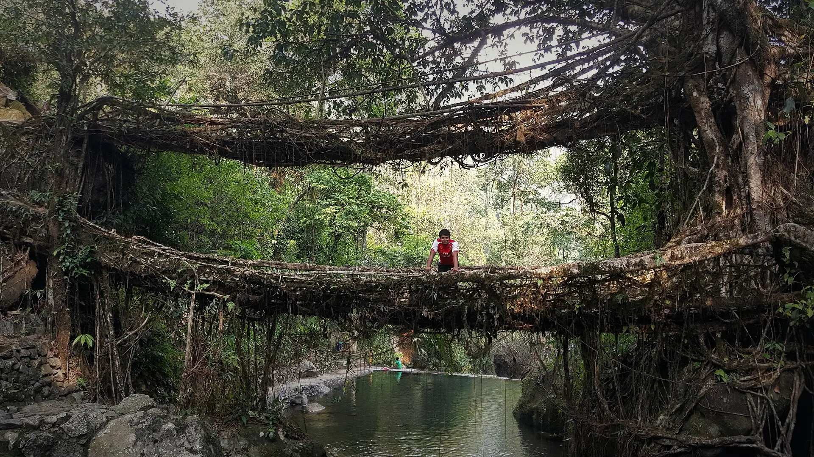

01Tyrnakm 0.1
The top of the steps
3,000+Steps · Down into the gorge
The walk starts at Tyrna, about 15 km from Sohra, at the top of a staircase of 3,000 or more steps.

Photo: Arijit Sahu, CC BY-SA 4.0Nongriat · East Khasi Hills, Northeast
The trek in one line, and what you can do with it.
A trek that starts at the top: down to the river, and the hard part is the climb back.
5 stops on the map, then the climb. Scroll the stops and the map follows.
01Tyrnakm 0.1
3,000+Steps · Down into the gorge
The walk starts at Tyrna, about 15 km from Sohra, at the top of a staircase of 3,000 or more steps.
02The first bridgekm 1.3
RootsMade of · Of the rubber fig
The first living root bridge. Khasi and Jaintia people guide the aerial roots of the rubber fig, Ficus elastica, across a stream until they grow strong enough to walk on.
03Nongriat · Double Deckerkm 2.6
~200yearsAge · Estimated
At Nongriat two root bridges are stacked one above the other: the Double Decker, Jingkieng Nongriat, thought to be about 200 years old.
04Rainbow Fallskm 4.9
~1hFrom Nongriat · Further up the valley
About an hour beyond the Double Decker, past more root bridges, the path reaches Rainbow Falls.
05Tyrnakm 9.2
UpHardest part · The steps back to Tyrna
Back past the Double Decker and up the long staircase to Tyrna: the hard part of the day.
Best in Oct–Mar.
Dark: the months the trek’s sources call its best. Mid: possible. See all treks in October.
Base prices from 4 operators’ own pages, per person. GST and travel are often extra. Treqz sells nothing.
₹1,752–18,450
The practical things, then the questions people ask.
Don't count on an ATM or card payment in the valley. Carry cash for the guide, fees and homestay.
Discover with DheerajPhone signal is weak in the valley. Tell your hotel where you'll stay and when you'll be back.
Discover with DheerajAbout ₹20 a person at the Double Decker, plus a small camera fee. Guides charge about ₹700–1,500 per group. Agree the rate at Tyrna.
Discover with DheerajTyrna is 30–45 minutes by taxi from Sohra. A small cab for the day costs about ₹3,500–4,500. Self-drive rental cars for tourists are banned since June 2025.
Discover with DheerajCarry 2–3 litres of water. Villagers sell water, chips and snacks along the trail.
Treks and Trails IndiaThere are no shops on the trail beyond Nongriat. Take lunch and a guide.
Muddie TrailsAbout 9.3 km of walking over 1 days on the trail.
The highest point is , about 0 m above the start.
Its sources grade it Moderate–hard.
Oct–Mar.
₹1,752 to ₹18,450 per person: base prices from 4 operators' own pages. GST and travel are often extra.
Phone signal is weak in the valley. Tell your hotel where you'll stay and when you'll be back.